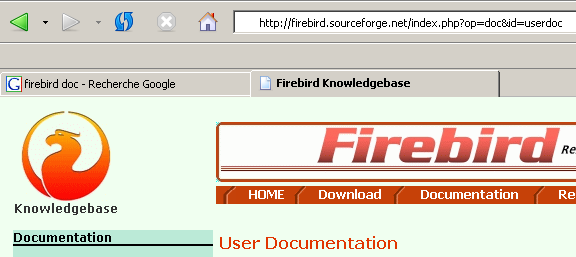
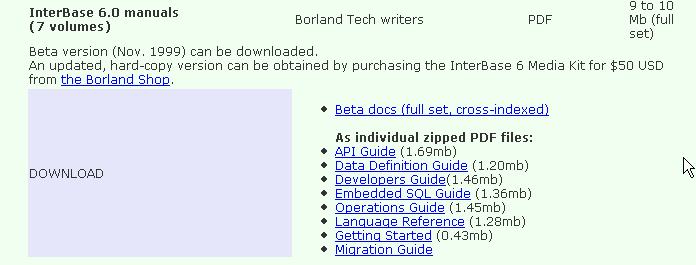
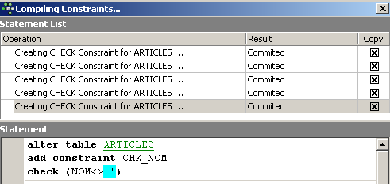
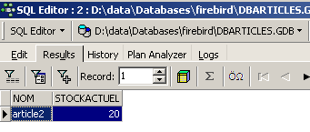
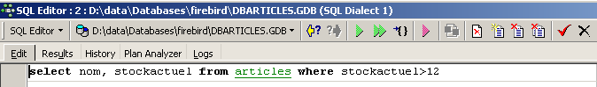
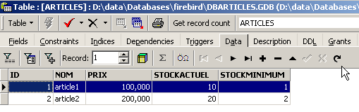
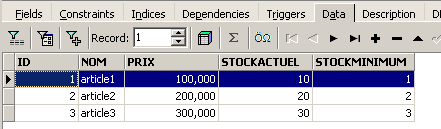
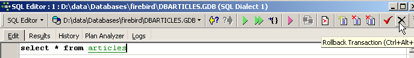
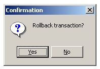

2. Firebird-Tutorial
Bevor wir uns mit den Grundlagen der Sprache SQL befassen, zeigen wir dem Leser, wie man Firebird sowie den grafischen Client IB-Expert installiert.
2.1. Wo findet man Firebird?
Die Hauptwebsite von Firebird lautet [http://firebird.sourceforge.net/]. Die Download-Seite bietet folgende Links (April 2005):

Laden Sie folgende Dateien herunter:
SGBD für Windows | |
eine Klassenbibliothek für .NET-Anwendungen, die den Zugriff auf SGBD ohne Verwendung eines Treibers ODBC ermöglicht. | |
der Firebird-Treiber ODBC |
Führen Sie die Installation dieser Komponenten durch. SGBD wird in einem Ordner installiert, dessen Inhalt in etwa wie folgt aussieht:
 |
Die Binärdateien befinden sich im Ordner [bin]:
 |
ermöglicht das Starten/Beenden von SGBD | |
ein Client-Programm zur Verwaltung von Datenbanken |
Es ist zu beachten, dass der Administrator von SGBD standardmäßig [SYSDBA] heißt und sein Passwort [masterkey] lautet. In [Démarrer] wurden Menüs eingerichtet:

Mit der Option [Firebird Guardian] kann SGBD gestartet bzw. beendet werden. Nach dem Start bleibt das Symbol von SGBD in der Windows-Taskleiste:
 |
Um Firebird-Datenbanken mit dem Befehlszeilen-Client [isql.exe] anzulegen und zu verwalten, muss die mit dem Produkt im Ordner [doc] gelieferte Dokumentation gelesen werden.
2.2. Die Firebird- -Dokumentation
Die Dokumentation zu Firebird und zur Sprache SQL finden Sie auf der Firebird-Website (Stand: Januar 2006):

Verschiedene Handbücher sind auf Englisch verfügbar:
Erste Schritte mit FB | |
zum Verständnis der von FB zurückgegebenen Fehlercodes |
Es stehen auch Schulungshandbücher zur Sprache SQL zur Verfügung:

um zu erfahren, wie man Tabellen erstellt, welche Datentypen verwendet werden können, ... | |
Das Referenzhandbuch zum Erlernen von SQL mit Firebird |
Eine schnelle Möglichkeit, mit Firebird zu arbeiten und die Sprache SQL zu erlernen, ist die Verwendung eines grafischen Clients. Ein solcher Client ist IB-Expert, der im folgenden Absatz beschrieben wird.
2.3. Arbeiten mit Firebird SGBD mithilfe von IB- Expert
Die Hauptwebsite von IB-Expert lautet [http://www.ibexpert.com/]. Die Download-Seite bietet folgende Links:

Man wählt die kostenlose Version [Personal Edition]. Sobald diese heruntergeladen und installiert ist, verfügt man über einen Ordner, der in etwa wie folgt aussieht:

Die ausführbare Datei lautet [ibexpert.exe]. Normalerweise ist im Menü eine Verknüpfung zu [Démarrer] vorhanden:

Nach dem Start zeigt IBExpert das folgende Fenster an:

Verwenden wir die Option [Database/Create Database] „ “, um eine Datenbank anzulegen:
kann [local] oder [remote] sein. Hier befindet sich unser Server auf demselben Rechner wie [IBExpert]. Wir wählen daher [local] | |
Verwenden Sie die Schaltfläche vom Typ [dossier] aus der Combobox, um die Datenbankdatei auszuwählen. Firebird speichert die gesamte Datenbank in einer einzigen Datei. Das ist einer seiner Vorteile. Die Datenbank lässt sich durch einfaches Kopieren der Datei von einem Rechner auf einen anderen übertragen. Die Endung [.gdb] wird automatisch hinzugefügt. | |
SYSDBA ist der Standardadministrator der aktuellen Firebird-Distributionen | |
„masterkey“ ist das Passwort des Administrators „SYSDBA“ der aktuellen Firebird-Distributionen | |
Der zu verwendende Dialekt SQL | |
Wenn das Kontrollkästchen aktiviert ist, zeigt IBExpert nach der Erstellung der Datenbank einen Link zu dieser an |
Wenn Sie auf die Schaltfläche „Erstellen“ ([OK]) klicken, erhalten Sie die folgende Warnmeldung:

dann haben Sie Firebird nicht gestartet. Starten Sie es. Es erscheint ein neues Fenster:

Zu verwendende Schriftart. Obwohl der obige Screenshot keine Informationen enthält, wird empfohlen, aus der Dropdown-Liste die Schriftart [ISO-8859-1] auszuwählen, die die Verwendung von lateinischen Zeichen mit Akzenten ermöglicht. |
[IBExpert] kann verschiedene von Interbase abgeleitete SGBD-Versionen verarbeiten. Wählen Sie die von Ihnen installierte Firebird-Version aus: |
Sobald dieses neue Fenster von [Register] bestätigt wurde, erhält man folgendes Ergebnis:

Um auf die erstellte Datenbank zuzugreifen, doppelklicken Sie einfach auf den entsprechenden Link. IBExpert zeigt dann eine Baumstruktur an, über die Sie auf die Eigenschaften der Datenbank zugreifen können:

2.4. Erstellen einer Datentabelle
Erstellen wir eine Tabelle. Wir klicken mit der rechten Maustaste auf [Tables] (siehe Fenster oben) und wählen die Option [New Table]. Daraufhin erscheint das Fenster zur Definition der Tabelleneigenschaften:
 |
Beginnen wir damit, der Tabelle den Namen [ARTICLES] zu geben, indem wir das Eingabefeld [1] verwenden:
 |
Verwenden wir das Eingabefeld „[2]“, um einen Primärschlüssel „[ID]“ zu definieren:
 |
Ein Feld wird durch einen Doppelklick auf das Feld „[PK]“ (Primärschlüssel) als Primärschlüssel festgelegt. Fügen wir über die Schaltfläche oberhalb von „[3]“ weitere Felder hinzu:

Solange wir unsere Definition nicht „kompiliert“ haben, wird die Tabelle nicht angelegt. Verwenden wir die Schaltfläche [Compile] oben, um die Definition der Tabelle abzuschließen. IBExpert bereitet die Abfragen SQL zur Erstellung der Tabelle vor und fordert eine Bestätigung an:

Interessanterweise zeigt IBExpert die Abfragen SQL an, die es ausgeführt hat. Dies ermöglicht das Erlernen sowohl der Sprache SQL als auch des möglicherweise verwendeten proprietären Dialekts SQL. Mit der Schaltfläche [Commit] kann die laufende Transaktion bestätigt werden, mit [Rollback] kann sie abgebrochen werden. Hier wird sie mit „[Commit]“ akzeptiert. Anschließend fügt „IBExpert“ die erstellte Tabelle zur Struktur unserer Datenbank hinzu:

Durch einen Doppelklick auf die Tabelle gelangt man zu deren Eigenschaften:

Über das Fenster [Constraints] können wir der Tabelle neue Integritätsbeschränkungen hinzufügen. Öffnen wir es:

Hier finden wir die von uns erstellte Primärschlüssel-Einschränkung wieder. Wir können weitere Einschränkungen hinzufügen:
- Fremdschlüssel [Foreign Keys]
- Feldintegritätsbeschränkungen [Checks]
- Eindeutigkeitsbeschränkungen für Felder: [Uniques]
Beachten Sie bitte:
- Die Felder [ID, PRIX, STOCKACTUEL, STOKMINIMUM] müssen >0 sein
- Das Feld [NOM] darf nicht leer sein und muss eindeutig sein
Öffnen wir das Fenster „[Checks]“ und klicken wir mit der rechten Maustaste in den Bereich zur Definition der Einschränkungen, um eine neue Einschränkung hinzuzufügen:

Definieren wir die gewünschten Einschränkungen:

Beachten Sie oben, dass die Einschränkung [NOM<>''] zwei Apostrophe und keine Anführungszeichen verwendet. Kompilieren wir diese Einschränkungen mit der Schaltfläche [Compile] oben:

Auch hier erweist sich IBExpert als sehr lehrreich, indem es die Abfragen SQL angibt, die es ausgeführt hat. Wenden wir uns nun dem Feld [Constraints/Uniques] zu, um festzulegen, dass der Name eindeutig sein muss. Das bedeutet, dass derselbe Name in der Tabelle nicht zweimal vorkommen darf.

Definieren wir die Einschränkung:

Anschließend kompilieren wir sie. Danach öffnen wir das Fenster [DDL] (Data Definition Language) der Tabelle [ARTICLES]:

Dieses Fenster enthält den Code SQL zur Generierung der Tabelle mit all ihren Einschränkungen. Dieser Code kann in einem Skript gespeichert werden, um ihn später erneut auszuführen:
SET SQL DIALECT 3;
SET NAMES NONE;
CREATE TABLE ARTICLES (
ID INTEGER NOT NULL,
NOM VARCHAR(20) NOT NULL,
PRIX DOUBLE PRECISION NOT NULL,
STOCKACTUEL INTEGER NOT NULL,
STOCKMINIMUM INTEGER NOT NULL
);
ALTER TABLE ARTICLES ADD CONSTRAINT CHK_ID check (ID>0);
ALTER TABLE ARTICLES ADD CONSTRAINT CHK_PRIX check (PRIX>0);
ALTER TABLE ARTICLES ADD CONSTRAINT CHK_STOCKACTUEL check (STOCKACTUEL>0);
ALTER TABLE ARTICLES ADD CONSTRAINT CHK_STOCKMINIMUM check (STOCKMINIMUM>0);
ALTER TABLE ARTICLES ADD CONSTRAINT CHK_NOM check (NOM<>'');
ALTER TABLE ARTICLES ADD CONSTRAINT UNQ_NOM UNIQUE (NOM);
ALTER TABLE ARTICLES ADD CONSTRAINT PK_ARTICLES PRIMARY KEY (ID);
2.5. Daten in eine Tabelle einfügen
Nun ist es an der Zeit, Daten in die Tabelle [ARTICLES] einzufügen. Dazu verwenden wir das zugehörige Bedienfeld [Data]:

Die Daten werden durch einen Doppelklick auf die Eingabefelder der einzelnen Zeilen der Tabelle eingegeben. Mit der Schaltfläche [+] wird eine neue Zeile hinzugefügt, mit der Schaltfläche [-] eine Zeile gelöscht. Diese Vorgänge finden in einer Transaktion statt, die über die Schaltfläche [Commit Transaction] (siehe oben) bestätigt wird. Ohne diese Bestätigung gehen die Daten verloren.
2.6. Der Editor SQL von [IB-Expert]
Die Sprache SQL (Structured Query Language) ermöglicht es einem Benutzer:
- Tabellen anzulegen und dabei den Datentyp sowie die Einschränkungen festzulegen, denen diese Daten entsprechen müssen
- Daten in diese Tabellen einzufügen
- bestimmte Daten zu ändern
- andere zu löschen
- den Inhalt der Tabellen auszuwerten, um Informationen zu erhalten
- ...
Mit IBExpert kann ein Benutzer die Vorgänge 1 bis 4 grafisch ausführen. Das haben wir gerade gesehen. Wenn die Datenbank zahlreiche Tabellen mit jeweils Hunderten von Zeilen enthält, benötigt man Informationen, die visuell nur schwer zu erfassen sind. Nehmen wir zum Beispiel an, dass ein Online-Shop monatlich Tausende von Käufern hat. Alle Käufe werden in einer Datenbank erfasst. Nach sechs Monaten stellt man fest, dass ein Produkt „X“ fehlerhaft ist. Man möchte alle Personen kontaktieren, die es gekauft haben, damit sie das Produkt für einen kostenlosen Umtausch zurücksenden. Wie findet man die Adressen dieser Käufer?
- Man könnte alle Tabellen manuell durchsehen und nach diesen Käufern suchen. Das würde einige Stunden dauern.
- Man kann einen Befehl SQL ausführen, der die Liste dieser Personen in wenigen Sekunden liefert
Die Sprache SQL ist nützlich, sobald
- , wenn die Datenmenge in den Tabellen groß ist
- wenn viele Tabellen miteinander verknüpft sind
- die benötigten Informationen auf mehrere Tabellen verteilt sind
- ...
Wir stellen nun den Editor SQL von IBExpert vor. Dieser ist über die Option [Tools/SQL Editor] oder [F12] zugänglich:

Man erhält dann Zugriff auf einen erweiterten Abfrage-Editor SQL, mit dem man Abfragen ausprobieren kann. Geben wir eine Abfrage ein:

Wir führen die Abfrage SQL über die Schaltfläche [Execute] oben aus. Wir erhalten das folgende Ergebnis:

Oben zeigt die Registerkarte „[Results]“ die Ergebnistabelle des Auftrags „SQL [Select]“ an. Um einen neuen Befehl SQL zu erteilen, kehren Sie einfach zur Registerkarte [Edit] zurück. Dort finden Sie dann den Befehl SQL, der bereits ausgeführt wurde.

Mehrere Schaltflächen der Symbolleiste sind nützlich:
- Mit der Schaltfläche [New Query] können Sie zu einer neuen Abfrage SQL wechseln:

Man erhält dann eine leere Bearbeitungsseite:

Nun kann man einen neuen Befehl SQL eingeben:

und diesen ausführen:

Kehren wir zur Registerkarte [Edit] zurück. Die verschiedenen ausgegebenen Befehle SQL werden durch [IB-xpert] gespeichert. Über die Schaltfläche [Previous Query] können Sie zu einem zuvor erteilten Auftrag SQL zurückkehren:

Man kehrt dann zur vorherigen Abfrage zurück:

Mit der Schaltfläche [Next Query] gelangt man hingegen zum nächsten Auftrag SQL:

Dort findet man dann den Auftrag SQL, der in der Liste der gespeicherten Aufträge SQL als nächster folgt:

Mit der Schaltfläche [Delete Query] können Sie einen Auftrag SQL aus der Liste der gespeicherten Aufträge löschen:

Mit der Schaltfläche [Clear Current Query] können Sie den Inhalt des Editors für den angezeigten Auftrag SQL löschen:

Mit der Schaltfläche „[Commit]“ können die an der Datenbank vorgenommenen Änderungen endgültig übernommen werden:

Mit der Schaltfläche „[RollBack]“ können die seit dem letzten „[Commit]“ an der Datenbank vorgenommenen Änderungen rückgängig gemacht werden. Wenn seit der Verbindung zur Datenbank kein „[Commit]“ ausgeführt wurde, werden die seit dieser Verbindung vorgenommenen Änderungen rückgängig gemacht.

Nehmen wir ein Beispiel. Fügen wir eine neue Zeile in die Tabelle ein:

Der Befehl SQL wird ausgeführt, es erfolgt jedoch keine Anzeige. Es ist nicht bekannt, ob der Eintrag erfolgt ist. Um dies herauszufinden, führen wir den Befehl SQL im Anschluss an [New Query] aus:

Man erhält mit [Execute] das folgende Ergebnis:

Die Zeile wurde also tatsächlich eingefügt. Sehen wir uns den Inhalt der Tabelle nun auf andere Weise an. Doppelklicken wir im Datenbank-Explorer auf die Tabelle [ARTICLES]:
Wir erhalten die folgende Tabelle:

Mit der Pfeilschaltfläche oben lässt sich die Tabelle aktualisieren. Nach der Aktualisierung ändert sich die obige Tabelle jedoch nicht. Es scheint, als wäre die neue Zeile nicht eingefügt worden. Kehren wir zum Editor SQL (F12) zurück und bestätigen wir den mit der Schaltfläche [Commit] erzeugten Auftrag SQL:

Anschließend kehren wir zur Tabelle [ARTICLES] zurück. Wir können feststellen, dass sich auch bei Verwendung der Schaltfläche [Refresh] nichts geändert hat:
Öffnen wir oben die Registerkarte [Fields] und kehren wir anschließend zur Registerkarte [Data] zurück. Diesmal wird die eingefügte Zeile korrekt angezeigt:

Wenn die Ausführung der verschiedenen Befehle SQL beginnt, eröffnet der Editor eine sogenannte Transaktion in der Datenbank. Die durch diese Befehle SQL des Editors SQL vorgenommenen Änderungen sind nur sichtbar, solange man im selben Editor SQL bleibt (man kann mehrere davon öffnen). Es ist so, als würde der Editor SQL nicht an der eigentlichen Datenbank arbeiten, sondern an einer eigenen Kopie. In der Realität läuft es nicht ganz so ab, aber dieses Bild kann uns helfen, das Konzept der Transaktion zu verstehen. Alle Änderungen, die während einer Transaktion an der Kopie vorgenommen werden, sind in der eigentlichen Datenbank erst sichtbar, wenn sie durch einen [Commit Transaction] bestätigt wurden. Die aktuelle Transaktion ist dann beendet und eine neue Transaktion beginnt.
Die im Verlauf einer Transaktion vorgenommenen Änderungen können durch einen Vorgang namens [Rollback] rückgängig gemacht werden. Machen wir folgendes Experiment: Starten wir eine neue Transaktion (dazu reicht es, [Commit] in der aktuellen Transaktion auszuführen) mit dem folgenden Befehl SQL:

Führen wir diesen Befehl aus, der alle Zeilen aus der Tabelle [ARTICLES] löscht, und führen wir anschließend den neuen Befehl SQL mit dem Befehl [New Query] aus:

Wir erhalten das folgende Ergebnis:

Alle Zeilen wurden gelöscht. Wir möchten daran erinnern, dass dies an einer Kopie der Tabelle [ARTICLES] durchgeführt wurde. Um dies zu überprüfen, doppelklicken wir auf die unten stehende Tabelle [ARTICLES]:
und sehen wir uns die Registerkarte [Data] an:

Selbst wenn wir die Schaltfläche „[Refresh]“ verwenden oder zur Registerkarte „[Fields]“ wechseln, um anschließend zur Registerkarte „[Data]“ zurückzukehren, bleibt der oben angezeigte Inhalt unverändert. Dies wurde bereits erläutert. Wir befinden uns in einer anderen Transaktion, die mit einer eigenen Kopie arbeitet. Kehren wir nun zum Editor SQL (F12) zurück und verwenden die Schaltfläche [RollBack], um die vorgenommenen Zeilenlöschungen rückgängig zu machen:

Wir werden um Bestätigung gebeten:

Bestätigen wir. Der Editor SQL bestätigt, dass die Änderungen rückgängig gemacht wurden:

Führen wir die obige Abfrage SQL zur Überprüfung erneut aus. Die zuvor gelöschten Zeilen sind wieder vorhanden:

Der Vorgang [Rollback] hat die Kopie, an der der Editor SQL arbeitet, in den Zustand zurückversetzt, in dem sie zu Beginn der Transaktion war.